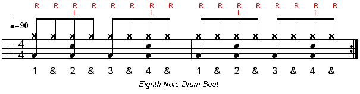
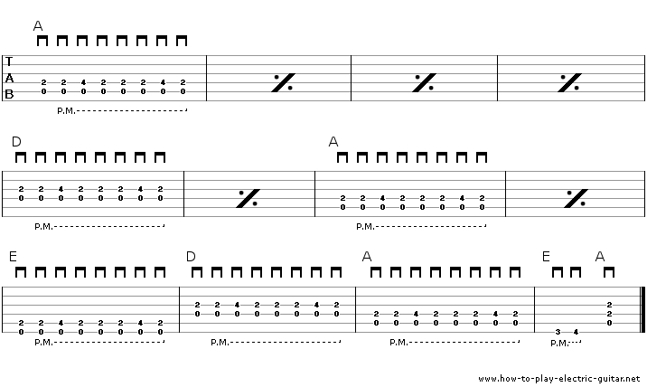
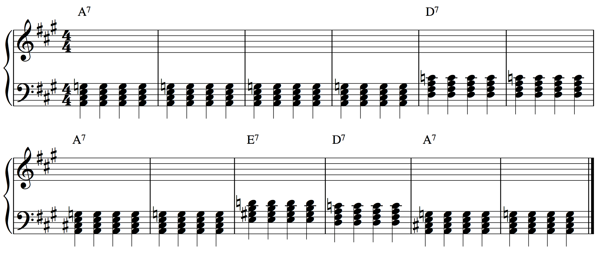

Drums
Drummers are the backbone of the entire band. Without it, the music rarely has the drive or energy that some genres require. As a drummer, you will need the following items:
Let's start your drumming journey with a simple 4/4 Beat.
This exercise shows one of the most basic drum beats for beginners. The bottom note in this figure represents the "Kick" drum, the Middle note represents the "Snare" drum, and the top "X" note represents the "Hi-hat" of a drumset. Practice this beat with the sheet music and recording provided!
Guitar/Bass
Let's use the same 90 bpm Tempo from the drum exercise to play this 12-bar blues for Bass and Guitar
If you play the Bass, try reading the tablatures. Tablatures tell you which "fret" to press down on your instrument.

This exercise is called a 12-bar blues, which is a very common piece of music. Practice to this recording!
Now if you're a guitar player, we're going to do the same exercise. I advise beginners to learn the bass part on your guitar first. The first four strings of your guitar are the same notes as the four strings on a bass!
Let's try the 12-bar blues on guitar with this Tablature and recording. The cross symbol with two dots means to repeat what you just played.
Piano
So you wanna learn Piano? Good on you! It's a tough instrument for beginners, but as long as you practice daily, you should be able to pick it up quickly.
Let's start with the 12-bar blues exercise. Play the chords with the recording. This can also double as a rhythm guitar part!
Vocals
You're the singer, you're the spokesperson of the band. In this exercise, sing along with the various instruments playing and see if you can match the notes with your voice.
Try singing the bass part first. When you feel confident, start improvising! Improvising is a important skill in music, especially as a vocalist. See if you can write some simple lyrics to your improv and see where your voice takes you!
Here is an example improvisation, just in case you're not sure!